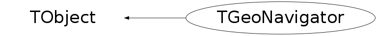

class TGeoNavigator: public TObject
TGeoNavigator Class providing navigation API for TGeo geometries. Several instances are allowed for a single geometry. A default navigator is provided for any geometry but one may add several others for parallel navigation: TGeoNavigator *navig = new TGeoNavigator(gGeoManager); Int_t inav = gGeoManager->AddNavigator(navig); gGeoManager->SetCurrentNavigator(inav); .... and then switch back to the default navigator: gGeoManager->SetCurrentNavigator(0);
Function Members (Methods)
public:
protected:
| TGeoNavigator(const TGeoNavigator&) | |
| TGeoNode* | CrossDivisionCell() |
| virtual void | TObject::DoError(int level, const char* location, const char* fmt, va_list va) const |
| TGeoNode* | FindInCluster(Int_t* cluster, Int_t nc) |
| Int_t | GetTouchedCluster(Int_t start, Double_t* point, Int_t* check_list, Int_t ncheck, Int_t* result) |
| void | TObject::MakeZombie() |
| TGeoNavigator& | operator=(const TGeoNavigator&) |
| void | SafetyOverlaps() |
Data Members
public:
| enum TObject::EStatusBits { | kCanDelete | |
| kMustCleanup | ||
| kObjInCanvas | ||
| kIsReferenced | ||
| kHasUUID | ||
| kCannotPick | ||
| kNoContextMenu | ||
| kInvalidObject | ||
| }; | ||
| enum TObject::[unnamed] { | kIsOnHeap | |
| kNotDeleted | ||
| kZombie | ||
| kBitMask | ||
| kSingleKey | ||
| kOverwrite | ||
| kWriteDelete | ||
| }; |
private:
| TGeoCacheState* | fBackupState | ! backup state |
| TGeoNodeCache* | fCache | ! cache of states |
| Double_t | fCldir[3] | ! unit vector to current closest shape |
| Double_t | fCldirChecked[3] | ! unit vector to current checked shape |
| TGeoHMatrix* | fCurrentMatrix | ! current stored global matrix |
| TGeoNode* | fCurrentNode | ! current node |
| Bool_t | fCurrentOverlapping | ! flags the type of the current node |
| TGeoVolume* | fCurrentVolume | ! current volume |
| Double_t | fDirection[3] | ! current direction |
| TGeoHMatrix* | fDivMatrix | ! current local matrix of the selected division cell |
| TGeoNode* | fForcedNode | ! current point is supposed to be inside this node |
| TGeoManager* | fGeometry | ! current geometry |
| TGeoHMatrix* | fGlobalMatrix | ! current pointer to cached global matrix |
| Bool_t | fIsEntering | ! flag if current step just got into a new node |
| Bool_t | fIsExiting | ! flag that current track is about to leave current node |
| Bool_t | fIsNullStep | ! flag that last geometric step was null |
| Bool_t | fIsOnBoundary | ! flag that current point is on some boundary |
| Bool_t | fIsOutside | ! flag that current point is outside geometry |
| Bool_t | fIsSameLocation | ! flag that a new point is in the same node as previous |
| Bool_t | fIsStepEntering | ! flag that next geometric step will enter new volume |
| Bool_t | fIsStepExiting | ! flaag that next geometric step will exit current volume |
| TGeoNode* | fLastNode | ! last searched node |
| Double_t | fLastPoint[3] | ! last point for which safety was computed |
| Double_t | fLastSafety | ! last computed safety radius |
| Int_t | fLevel | ! current geometry level; |
| Int_t | fNextDaughterIndex | ! next daughter index after FindNextBoundary |
| TGeoNode* | fNextNode | ! next node that will be crossed |
| Int_t | fNmany | ! number of overlapping nodes on current branch |
| Double_t | fNormal[3] | ! cosine of incident angle on current checked surface |
| Int_t* | fOverlapClusters | ! internal array for overlaps |
| Int_t | fOverlapMark | ! current recursive position in fOverlapClusters |
| Int_t | fOverlapSize | ! current size of fOverlapClusters |
| TString | fPath | ! path to current node |
| Double_t | fPoint[3] | ! current point |
| Double_t | fSafety | ! safety radius from current point |
| Bool_t | fSearchOverlaps | ! flag set when an overlapping cluster is searched |
| Bool_t | fStartSafe | ! flag a safe start for point classification |
| Double_t | fStep | ! step to be done from current point and direction |
| Int_t | fThreadId | ! thread id for this navigator |
| TGeoNode* | fTopNode | ! top physical node |
Class Charts
{kind=link}
{kind=link}
{kind=link}
{kind=link}

Function documentation
void BuildCache(Bool_t dummy = kFALSE, Bool_t nodeid = kFALSE)
Builds the cache for physical nodes and global matrices.
Bool_t cd(const char* path = "")
Browse the tree of nodes starting from top node according to pathname. Changes the path accordingly.
Bool_t CheckPath(const char* path) const
Check if a geometry path is valid without changing the state of the navigator.
void CdNode(Int_t nodeid)
Change current path to point to the node having this id. Node id has to be in range : 0 to fNNodes-1 (no check for performance reasons)
void CdDown(Int_t index)
Make a daughter of current node current. Can be called only with a valid daughter index (no check). Updates cache accordingly.
void CdUp()
Go one level up in geometry. Updates cache accordingly. Determine the overlapping state of current node.
void CdTop()
Make top level node the current node. Updates the cache accordingly. Determine the overlapping state of current node.
void GetBranchNumbers(Int_t* copyNumbers, Int_t* volumeNumbers) const
Fill node copy numbers of current branch into an array.
TGeoNode * CrossDivisionCell()
Cross a division cell. Distance to exit contained in fStep, current node points to the cell node.
TGeoNode * CrossBoundaryAndLocate(Bool_t downwards, TGeoNode* skipnode)
Cross next boundary and locate within current node The current point must be on the boundary of fCurrentNode.
TGeoNode * FindNextBoundary(Double_t stepmax = TGeoShape::Big(), const char* path = "", Bool_t frombdr = kFALSE)
Find distance to next boundary and store it in fStep. Returns node to which this boundary belongs. If PATH is specified, compute only distance to the node to which PATH points. If STEPMAX is specified, compute distance only in case fSafety is smaller than this value. STEPMAX represent the step to be made imposed by other reasons than geometry (usually physics processes). Therefore in this case this method provides the answer to the question : "Is STEPMAX a safe step ?" returning a NULL node and filling fStep with a big number. In case frombdr=kTRUE, the isotropic safety is set to zero. Note : safety distance for the current point is computed ONLY in case STEPMAX is specified, otherwise users have to call explicitly TGeoManager::Safety() if they want this computed for the current point.
TGeoNode * FindNextDaughterBoundary(Double_t* point, Double_t* dir, Int_t& idaughter, Bool_t compmatrix = kFALSE)
TGeoNode * FindNode(Double_t x, Double_t y, Double_t z)
Returns deepest node containing current point.
Double_t * FindNormalFast()
Computes fast normal to next crossed boundary, assuming that the current point is close enough to the boundary. Works only after calling FindNextBoundary.
Double_t * FindNormal(Bool_t forward = kTRUE)
Computes normal vector to the next surface that will be or was already crossed when propagating on a straight line from a given point/direction. Returns the normal vector cosines in the MASTER coordinate system. The dot product of the normal and the current direction is positive defined.
TGeoNode * InitTrack(const Double_t* point, const Double_t* dir)
Initialize current point and current direction vector (normalized) in MARS. Return corresponding node.
TGeoNode * InitTrack(Double_t x, Double_t y, Double_t z, Double_t nx, Double_t ny, Double_t nz)
Initialize current point and current direction vector (normalized) in MARS. Return corresponding node.
Double_t Safety(Bool_t inside = kFALSE)
Compute safe distance from the current point. This represent the distance from POINT to the closest boundary.
TGeoNode * SearchNode(Bool_t downwards = kFALSE, const TGeoNode* skipnode = 0)
Returns the deepest node containing fPoint, which must be set a priori.
TGeoNode * FindInCluster(Int_t* cluster, Int_t nc)
Find a node inside a cluster of overlapping nodes. Current node must be on top of all the nodes in cluster. Always nc>1.
Int_t GetTouchedCluster(Int_t start, Double_t* point, Int_t* check_list, Int_t ncheck, Int_t* result)
Make the cluster of overlapping nodes in a voxel, containing point in reference of the mother. Returns number of nodes containing the point. Nodes should not be offsets.
TGeoNode * Step(Bool_t is_geom = kTRUE, Bool_t cross = kTRUE)
Make a rectiliniar step of length fStep from current point (fPoint) on current direction (fDirection). If the step is imposed by geometry, is_geom flag must be true (default). The cross flag specifies if the boundary should be crossed in case of a geometry step (default true). Returns new node after step. Set also on boundary condition.
Int_t GetVirtualLevel()
Find level of virtuality of current overlapping node (number of levels up having the same tracking media.
Bool_t IsSameLocation(Double_t x, Double_t y, Double_t z, Bool_t change = kFALSE)
Checks if point (x,y,z) is still in the current node. check if this is an overlapping node
Bool_t IsSafeStep(Double_t proposed, Double_t& newsafety) const
In case a previous safety value was computed, check if the safety region is still safe for the current point and proposed step. Return value changed only if proposed distance is safe.
Bool_t IsSamePoint(Double_t x, Double_t y, Double_t z) const
Check if a new point with given coordinates is the same as the last located one.
void MasterToTop(const Double_t* master, Double_t* top) const
Convert coordinates from master volume frame to top.
void TopToMaster(const Double_t* top, Double_t* master) const
Convert coordinates from top volume frame to master.
TGeoHMatrix * GetDivMatrix() const
Double_t GetNormalChecked() const {return fNormalChecked;}
{return fDivMatrix;}void SetCurrentPoint(Double_t x, Double_t y, Double_t z)
void SetLastPoint(Double_t x, Double_t y, Double_t z)
void SetCurrentDirection(Double_t nx, Double_t ny, Double_t nz)
void SetLastSafetyForPoint(Double_t safe, const Double_t* point)
{fLastSafety=safe; memcpy(fLastPoint,point,3*sizeof(Double_t));}void LocalToMaster(const Double_t* local, Double_t* master) const
--- point/vector reference frame conversion
{fCache->LocalToMaster(local, master);}void LocalToMasterVect(const Double_t* local, Double_t* master) const
{fCache->LocalToMasterVect(local, master);}void LocalToMasterBomb(const Double_t* local, Double_t* master) const
{fCache->LocalToMasterBomb(local, master);}void MasterToLocal(const Double_t* master, Double_t* local) const
{fCache->MasterToLocal(master, local);}void MasterToLocalVect(const Double_t* master, Double_t* local) const
{fCache->MasterToLocalVect(master, local);}void MasterToLocalBomb(const Double_t* master, Double_t* local) const
{fCache->MasterToLocalBomb(master, local);}TGeoNodeCache * GetCache() const
void SetCache(const TGeoNodeCache *cache) {fCache = (TGeoNodeCache*)cache;} --- stack manipulation
{return fCache;}Int_t PushPath(Int_t startlevel = 0)
{return fCache->PushState(fCurrentOverlapping, startlevel, fNmany);}Bool_t PopPath()
{fCurrentOverlapping=fCache->PopState(fNmany); fCurrentNode=fCache->GetNode(); fLevel=fCache->GetLevel();fGlobalMatrix=fCache->GetCurrentMatrix();return fCurrentOverlapping;}Bool_t PopPath(Int_t index)
{fCurrentOverlapping=fCache->PopState(fNmany,index); fCurrentNode=fCache->GetNode(); fLevel=fCache->GetLevel();fGlobalMatrix=fCache->GetCurrentMatrix();return fCurrentOverlapping;}Int_t PushPoint(Int_t startlevel = 0)
{return fCache->PushState(fCurrentOverlapping, startlevel,fNmany,fPoint);}Bool_t PopPoint()
{fCurrentOverlapping=fCache->PopState(fNmany,fPoint); fCurrentNode=fCache->GetNode(); fLevel=fCache->GetLevel(); fGlobalMatrix=fCache->GetCurrentMatrix();return fCurrentOverlapping;}Bool_t PopPoint(Int_t index)
{fCurrentOverlapping=fCache->PopState(fNmany,index, fPoint); fCurrentNode=fCache->GetNode(); fLevel=fCache->GetLevel(); fGlobalMatrix=fCache->GetCurrentMatrix();return fCurrentOverlapping;}